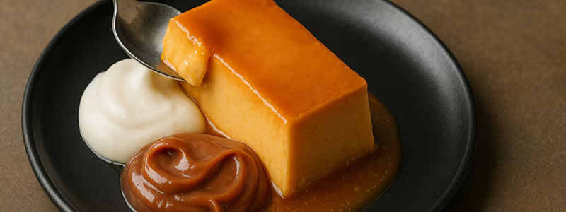
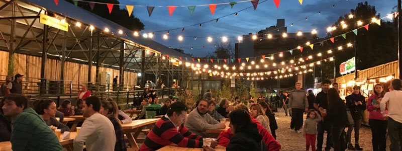

Donde comer
En este buscador vas a poder filtrar por nombre, tipo de establecimiento y barrio
Ver más

En este buscador vas a poder filtrar por nombre, tipo de establecimiento y barrio
Ver másEn Buenos Aires vas a encontrar platos típicos y comida de todo el mundo
Ver más
Conocé los patios y mercados en donde podés disfrutar de la mejor gastronomía de la ciudad